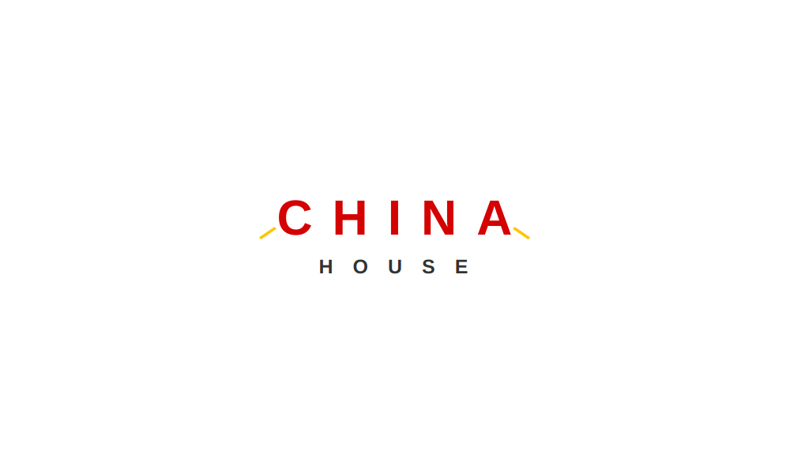

I am currently a graduating senior (June 2018) at Drexel University, pursuing a Bachelor of Science in Computer Science with concentrations in Human-Computer Interaction and Software Engineering.
My interests include front-end developement, UX and mobile/web development. Besides designing web applications, I enjoy eating, playing board games and traveling.
Thanks for visiting my website!

▸ Takeout
Role: Sole Programmer
Independent project (Ongoing)
The purpose of this project is to practice developing front-end by redesigning the website for my favorite takeout place, China House.
Independent project (Ongoing)
The purpose of this project is to practice developing front-end by redesigning the website for my favorite takeout place, China House.
▸ Parlor
Role: Front-End Developer
Worked with Alec Newman
A distributed board game server that was created by a desire to play games with friends. The theme of the front-end is reminiscent of vintage board games.
Worked with Alec Newman
A distributed board game server that was created by a desire to play games with friends. The theme of the front-end is reminiscent of vintage board games.
▸ Customer Profile Wireframe
Role: Sole Programmer
Independent project
The purpose of this project was to design a wireframe utilizing a set of required components and organize the information in a logical manner.
Independent project
The purpose of this project was to design a wireframe utilizing a set of required components and organize the information in a logical manner.
▸ Dash & Dine
Role: Creative Director and Programmer
Worked with Michael Luker and Eric Saputa
This project was created for CS 275 which focused on developing Android apps. This app facilitate deliveries from food trucks by availible students for students who are busy.
Worked with Michael Luker and Eric Saputa
This project was created for CS 275 which focused on developing Android apps. This app facilitate deliveries from food trucks by availible students for students who are busy.
▸ Virtual Integrated Pantry
Role: Creative Director and Programmer
Worked with Edward Aryee, Stevie Parris and Tom Sisson
This project was for ENGR 103 which focused on developing iOS apps. This app generates recipes that can be made using items that are already in the pantry.
Worked with Edward Aryee, Stevie Parris and Tom Sisson
This project was for ENGR 103 which focused on developing iOS apps. This app generates recipes that can be made using items that are already in the pantry.